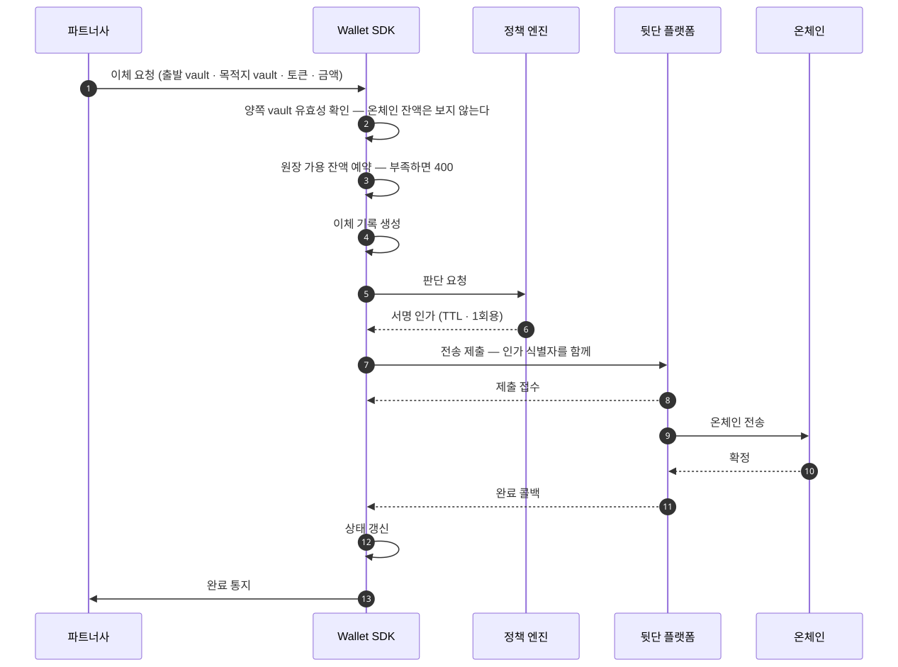

Vault 이체 (Vault Transfer)
Vault 이체는 워크스페이스 vault에서 다른 워크스페이스 vault로 자산을 옮기는 이동입니다. 이 페이지는 그 흐름과 확인 근거가 빠지는 이유, 상태 단계와 실패 사유, 재시도 복구 방법을 설명합니다. 출발지와 목적지가 둘 다 Wallet SDK 안의 vault라, 목적지 확인 근거가 필요 없는 유일한 이동입니다.
요청 하나가 접수에서 완료 통지까지 한 흐름으로 처리됩니다
다이어그램의 배역은 다섯입니다.
- 파트너사: Wallet SDK를 도입한 회사, 곧 Workspace 하나입니다
- Wallet SDK: 파트너 대상 API를 받아 정책 엔진에 판단을 묻고 서명 인프라에 제출하는 서버 컴포넌트입니다
- 정책 엔진: 자금을 움직이는 요청이 서명 인프라로 가기 전에 그 요청을 심사하는 별도 시스템입니다
- 뒷단 플랫폼: 지갑과 키를 보관하고 트랜잭션을 제출하는 외부 플랫폼입니다
- 온체인: 블록체인 네트워크입니다

양쪽 끝이 내부라 확인 근거가 빠집니다
출금은 목적지가 외부라 주소록이나 트래블룰로 근거를 세웁니다. vault 이체는 양쪽이 다 Wallet SDK가 소유한 vault여서 그 절차가 통째로 빠집니다.
남는 통과 조건은 서명 인가 하나입니다. 서명 인가는 승인된 판단 요청이 발급하는 한 번만 쓸 수 있는 서명 근거입니다. 정책은 출발·목적지 vault와 토큰과 금액을 보고 판단합니다. 판단과 집행이 나뉘는 구조는 서명 게이트에 있습니다.
vault의 용도 태그를 정책이 읽는 경로는 신설 예정입니다. 지금은 그 태그를 판단 입력으로 가져오는 수집 경로가 없고, 신설이 정해졌습니다. 상세는 평가 시점에 사실을 읽어 오는 수집 경로인 PIP에 있습니다.
쌍은 종류를 가리지 않되 워크스페이스를 넘지 않습니다
같은 워크스페이스 안이면 어느 vault에서 어느 vault로든 갑니다. vault를 가르는 것은 파트너사가 vault 용도를 정의하는 값인 용도 태그입니다. 그 태그는 이동을 막는 벽이 아니라 정책 판단에 쓰려고 두는 값입니다.
워크스페이스를 넘는 이동은 없습니다. 남의 워크스페이스 vault를 목적지로 지목하면 조회 단계에서 없는 것으로 답하고, 정책 쪽에서도 평가에 들어가기 전에 한 번 더 막습니다.
이것을 룰로 막지 않는 이유는 정책이 평가하는 요청 항목에 워크스페이스가 없기 때문입니다. 룰은 목적지 vault의 종류까지만 지목할 수 있어, 그 앞의 수집 단계가 이 역할을 대신합니다.
계정 지갑은 어느 쪽에도 오지 않습니다. 계정 지갑에서 vault로 오는 이동은 집금이고, vault에서 계정 지갑으로 되돌아가는 경로는 없습니다.
잔액 부족은 드러나는 시점이 둘입니다
원장 가용 잔액이 모자라면 요청 시점에 400입니다(WORKSPACE_VAULT_INSUFFICIENT_BALANCE).
온체인 잔액 부족만 사후에 이체 상태로 드러납니다.
이체를 접수할 때 온체인 잔액이 충분한지는 조회하지 않습니다. 부족은 뒷단 플랫폼이 제출을 거절할 때 드러나고, 그 건은 잔액 부족을 사유로 실패 마킹됩니다.
Wallet SDK 원장 기준의 예약은 그것과 별개로 적용됩니다. vault 이체도 지갑을 출발지로 쓰는 송금이라 접수 시점에 금액을 예약하고, 송금이 성공하면 그 예약을 확정합니다.
송금이 실패하면 예약이 풀립니다. 예약이 막는 것은 동시 요청이 같은 잔액을 두 번 쓰는 것이고, 온체인 충분성은 예약을 통과한 뒤에도 보증되지 않습니다. 예약의 기준 설명은 자금 동결에 있습니다.
상태는 네 단계를 지나고 어디서든 실패합니다
접수 → 심사 → 온체인 → 완료 순으로 갑니다. 어느 단계에서든 실패로 끝날 수 있습니다.
세부 상태가 그 안을 가릅니다. 접수 단계에서만 비어 있고 그 뒤로는 항상 채워집니다. 값 목록은 Wallet API에 있습니다.
실패 사유는 드러나는 시점으로 갈립니다
요청 시점에 400으로 거부되는 것은 다섯입니다 — 출발지와 목적지가 같은 vault
(WORKSPACE_VAULT_TRANSFER_SOURCE_DESTINATION_SAME), 금액이 0 이하이거나 토큰 정밀도를 넘는 경우
(..._INVALID_AMOUNT), 같은 referenceId가 이미 쓰인 경우(..._REFERENCE_CONFLICT), 어느 한쪽
vault가 비활성인 경우(WORKSPACE_VAULT_INACTIVE), 출발 vault의 원장 가용 잔액이 모자란 경우
(WORKSPACE_VAULT_INSUFFICIENT_BALANCE)입니다.
정책 거부도 요청 시점에 400으로 옵니다(..._POLICY_DENIED). 다만 이체 기록은 남고 실패
상태로 마킹됩니다. 거부된 시도가 조회되지 않으면 무슨 일이 있었는지 되짚을 수 없기 때문입니다.
404는 “없다”로 통일합니다. vault·토큰·해당 지갑이 없을 때가 여기 들어가고, 남의 워크스페이스 자원도 같은 응답입니다. 코드를 갈라 주면 그것이 곧 존재 여부를 알려주는 오라클이 됩니다.
제출 이후에 드러나는 것은 잔액 부족과 트랜잭션 revert, 타임아웃입니다. 상태와 세부 상태에 담겨 오고 요청 응답에는 나타나지 않습니다.
제출 결과 자체가 불명이면 503입니다(..._PROVIDER_UNAVAILABLE). 이때 이체는 실패가 아니라
접수 상태로 남고, 기록과 뒷단 플랫폼의 사실이 어긋난 것을 바로잡는 2차 방어인 대사가 정리합니다.
나갔는지 모르는 것을 실패로 판정하면 이중 송금이 일어날 수 있습니다.
값 목록과 전체 조건은 Wallet API가 기준 문서입니다.
재시도 복구는 referenceId로 합니다
요청에 referenceId를 실으면 그 값으로 이체를 되찾을 수 있습니다. 같은 값으로 두 번 만들면
거부되므로 업무 단위 중복도 함께 막힙니다.
Idempotency-Key 헤더는 아직 동작하지 않습니다. 현재 상태는 첫 요청에
있습니다.
양쪽이 내부라 출금과 확인 근거가 갈립니다
| vault 이체 | 출금 | |
|---|---|---|
| 목적지 | 워크스페이스 vault | VASP · 개인 지갑 · 회사 외부 지갑 |
| 확인 근거 | 없음 — 양쪽이 내부입니다 | 주소록 또는 트래블룰 |
| 트래블룰 | 타지 않습니다 | 계정 귀속 출금의 VASP 목적지만 |
| 자금 귀속 | 워크스페이스 | 최종 사용자 또는 회사 |
다음으로
vault 이체는 완료와 실패만 통지합니다 — VAULT_TRANSFER_FINALIZED·VAULT_TRANSFER_FAILED.
시작 통지가 없으므로 접수 직후 상태는 조회로 확인합니다. 통지 본문은
웹훅에 있습니다.
셋으로 나뉜 출금은 출금에 있습니다.